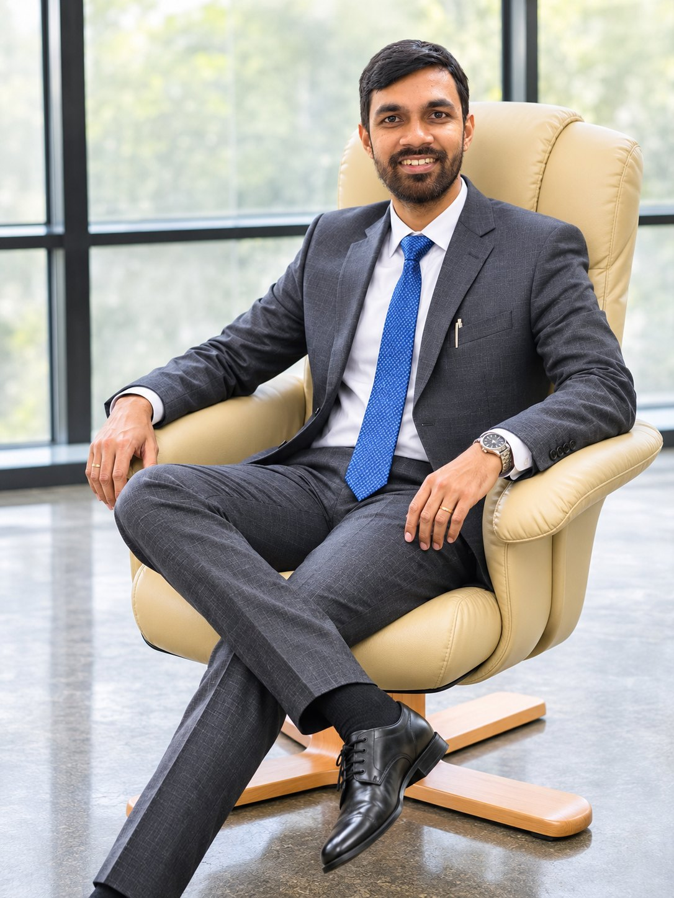

My professional and personal journey, from accounting books to ragas.

B.Com, then the Chartered Accountancy qualification.
12+ years of Hindustani classical music under Pt. Vinayaka Hegde Hirehadda, disciple of Pt. Ganapati Bhat Hasanagi. Completed the Senior examination and won a Government of Karnataka scholarship. Concerts across Uttara Kannada and Bangalore.
In 2012, started a WhatsApp broadcast sharing one Hindustani classical recording a day with 3,000+ music lovers.
Started my blog in 2017, writing on society, the economy and India in Kannada and English.
DISA (Information Systems Audit), plus ICAI certificates in Forensic Accounting & Fraud Detection and Concurrent Audit of Banks in 2022.
Partner at Shriganesh & Subrahmanya Chartered Accountants, Hubballi, with a young, tech-savvy team serving 1000+ clients.
Mentor to 1500+ entrepreneurs through CEDOK, keynote speaker at startup events, and CA Day awardee of the Rotary Club of Hubli Elite.
AI certified and exploring how technology changes accounting, while staying close to Hindustani music, Vedic astrology and Vedanta.
Practical taxation, GST, audit and finance.
Explore →Building businesses beyond professional practice.
Explore →AI, automation and the future of accounting.
Explore →Discipline, leadership, productivity, books and ideas.
Explore →Music, Vedic astrology, Vedanta, travel and reflections.
Explore →